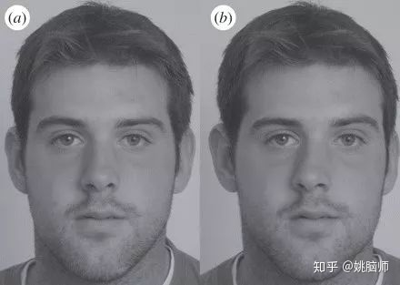
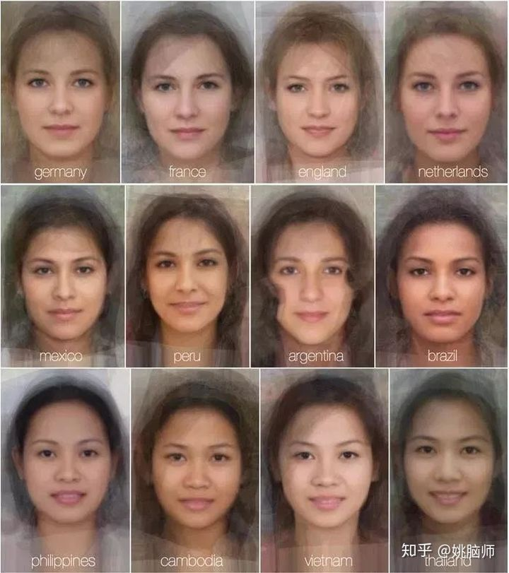
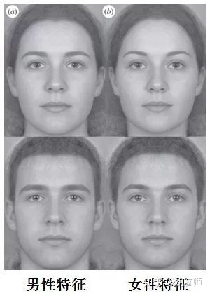

长辈总说找对象要看心灵美
话虽是这么说
真的找起来，男女老少还是要！看！脸！
脸都看不上的，心灵美不存在的
君不见国内「网红脸」一波未凉一波又起
隔壁韩国走得更远，连男人都要靠化妆整容找工作了！
文明在进步，可人类为什么依旧如此“肤浅”？
看脸的世界是一种祝福还是诅咒？
1 看脸其实是人类的集体智慧
2000年的一项研究综合分析了900多篇期刊文章，发现全世界人民，无论他们身处何种文化（单一的或多元的）、是何种族，对高颜值的标准有着惊人的相似度 [1]。当高颜值标准具有跨文化、跨时空的普遍适用性，这就意味着“看脸”这一普遍行为很有可能是自然选择的结果，是人类在进化过程中的集体智慧。
从进化的角度来看，如果面部特征能在某种程度上反映一个人的繁衍价值和生存价值（是否健康，有没有携带寄生虫），那些会通过“看脸”择偶的个体就更有机会把自己的基因传递下去（会挑选高富帅/白富美的人就能生出更容易存活的后代）。这样说来，“看脸”其实是一种适应环境的行为。
如果“看脸”关系到个体的生存和繁殖，那什么样的脸才能反映较高的繁衍和生存价值呢？
俗话说的好，情人眼里出西施。好看不好看难道不是青菜萝卜各有所爱？
就好像有人迷吴亦凡迷得耳晕目眩，有人爱刘昊然爱得一往情深。
虽然颜值的标准有很大个体和文化差异，但是科学家发现至少有三大的特征在人类范围内普遍适用，是高颜值的象征。
2 高颜值的3大特征
这第一个特征就是面部对称度。
下图两张脸左边为对称脸，右边为不对称脸。相信大多数人会偏爱对称的脸a。

按照基因的设计蓝图，在最优条件下，人的左右脸应当是绝对对称的。然而构想都是美好的，现实却总是会被打脸。
人左右脸的发育情况会受到个体基因和成长环境的共同影响。从基因来看，如果个体的基因发生突变，或是近亲繁殖，那面部发育就可能出现畸形。就环境来讲，如果个体在成长过程中缺乏营养，或是感染寄生虫，亦或是小时候老被人打脸，也会出现左右脸发育不匀的结果。
这样说来，一个人的脸越是发育得对称，就说明这个人越健康。不仅基因上没什么特别的突变，而且TA也不大可能带有影响发育的寄生虫。这个理论确有实验证据支持，显示面部对称度和一些疾病有相关性，比如面部不对称的人自称更容易感染呼吸道方面的疾病 [3]（丑就丑了，还要死的比别人早……）。
第二个高颜值特征是平均脸（面部平均度Averageness）。一个人的脸部特征越接近人口平均水平，其颜值就越高 [4]。如下图是几个国家女性画像合成的平均图片，是不是每一个都能算得上好看呢？

有的人可能觉得特别美和特别丑的人不应该是少数吗？为什么“平均脸”反而高颜值呢？
这是因为平均脸其实反映了基因的多样性。如果一个人只有方脸基因或只有圆脸基因那就不会那么好看。如果各种基因混在一起，脸型就比较适中，相对就比较好看。这也就不难理解为什么混血儿（基因多样）通常颜值比较高。
基因多样有什么好处呢？
一个人的基因越多样，对病原体和寄生虫的抵抗力越强 [5]。这相当于在RPG游戏里练了一个「万精油」的角色，能打能抗还能自己加血。在打BOSS的时候，只加智力的法师基本都被小怪秒了，只加敏捷的盗贼完全抗不住魔法攻击。也只有那些个什么都会一点的圣骑士啊，德鲁伊什么的才能像小强一样笑到最后。
第三个高颜值特征是面部的第二性征。男人的脸越男性化（宽下巴，高颧骨，大胡子）越帅，女人的脸越女性化（男性反面）越美。比如在下面这组图片里，大多数的人会觉得左侧的男脸更帅。右侧的女脸更美。

男女性成熟后由于性激素的作用，面部特征出现分化 [6]。面部分化越明显，就反映该个体基因的质量越高。这是因为第二性征其实是一种「生理缺陷」，要损耗大量能量和时间才能生成 [7]。比如，睾丸酮（雄性激素）会降低个体的免疫能力 [8]。如果一个男性的第二性征很明显，而且他还很健康地活着，这说明他的免疫系统生来就很强大——经受住了睾丸酮带来的考验。
除了以上三个特征，还有很多普遍适用的面部特征如：皮肤健康度、肤色等也和颜值相关。但不论是哪个特征，大多能反映该个体的健康状况和基因质量。如此看来，“看脸”其实是有生物学基础的。它不但不是肤浅的表现，而且是难得的生存智慧。
然而不幸的是，人类总是会聪明过了头，最后搬起石头砸了自己的脚。
3 假貌泛滥对进化的挑战
当颜值能“真实”反映一个人的健康程度的时候，“看脸”其实是非常有效的一种择偶策略，是对人类进化有益的。
但聪明反被聪明误，人类对颜值的过度追求孕育出了「PS」、「化妆」和「整容」这三大恶人。。。
大家都知道朋友圈的照骗没在手机上P两小时都不敢放，不加个滤镜都不好意思说自己有instagram。网友第一次约见转了俩小时愣是没认出约会对象。原以为视频通话可以判定颜值，没成想现在的视频APP都自带美颜效果……
为了有张美丽的脸，各路美妆博主在网上也是画脸点睛，各显神通。她们技艺高超，靠一支神笔就能把马云化成杨洋，把罗玉凤化成高圆圆。
更有决心的会 “对自己狠一点”，动刀子。整容技术的迅猛发展，批量生产了一批批的小鲜肉和小仙女，让人目不暇接。
当然，PS、化妆或是整容都是人们的自由。
真正的问题在于，当 “貌” 不再真实， “看脸” 也便脱离了它的生物基础。人们对颜值的追求造成了“假貌” 的泛滥，反而导致颜值成为一个空洞的数字。
“假貌” 的泛滥会导致我们对平均脸的判断失真。
由于大脑对平均脸的计算离不开看脸的经验。越是常见的脸，大脑加工起来就越省心，也觉得越有吸引力 [9]。比如说，我们看镜子里的自己（镜像脸）看得多，常常会对着镜子自恋。但是一看到自己的照片（实际脸）就觉得自己怎么辣么丑。
如果我们天天看到的都是高颜值的“假貌”，那大脑计算出来的平均脸就要比实际的平均颜值要高很多。**这给少男少女们无形增加了很大的心理压力，对自己的相貌缺乏自信。**他们有的被迫加入 “假貌” 的队伍，加剧了 “假貌” 的泛滥。有的在抑郁中不能自拔，影响了正常的生活。那些“对自己狠一点”的人成家之后，可能还要担心以后如何跟自己的孩子解释……
“看脸”本是一种有用的本能，但是在 “假貌” 盛行的今天它反而带来了伤害。
希望在不久的将来，人类能醒悟过来，掀起一股 “我素颜我自豪” 的浪潮，让看脸发挥其应有的价值！
真实的才是最美的
不是吗？
参考文献
- Langlois, J. H., Kalakanis, L., Rubenstein, A. J., Larson, A., Hallam, M., & Smoot, M. (2000). Maxims or myths of beauty? A meta-analytic and theoretical review. Psychological bulletin, 126(3), 390.
- Cunningham, M. R., Roberts, A. R., Barbee, A. P., Druen, P. B., & Wu, C. H. (1995). ” Their ideas of beauty are, on the whole, the same as ours”: Consistency and variability in the cross-cultural perception of female physical attractiveness. Journal of Personality and Social Psychology, 68(2), 261.
- Thornhill, R., & Gangestad, S. W. (2006). Facial sexual dimorphism, developmental stability, and susceptibility to disease in men and women. Evolution and Human Behavior, 27(2), 131-144.
- Langlois, J. H., & Roggman, L. A. (1990). Attractive faces are only average. Psychological science, 1(2), 115-121.
- Thornhill, R., & Gangestad, S. W. (1993). Human facial beauty. Human nature, 4(3), 237-269.
- Enlow, D. H., & Moyers, R. E. (1982). Handbook of facial growth. WB Saunders Company.
- Zahavi, A. (1975). Mate selection—a selection for a handicap. Journal of theoretical Biology, 53(1), 205-214.
- Kanda, N., Tsuchida, T., & Tamaki, K. (1996). Testosterone inhibits immunoglobulin production by human peripheral blood mononuclear cells. Clinical & Experimental Immunology, 106(2), 410-415.
- Zajonc, R. B. (2001). Mere exposure: A gateway to the subliminal. Current directions in psychological science, 10(6), 224-228.